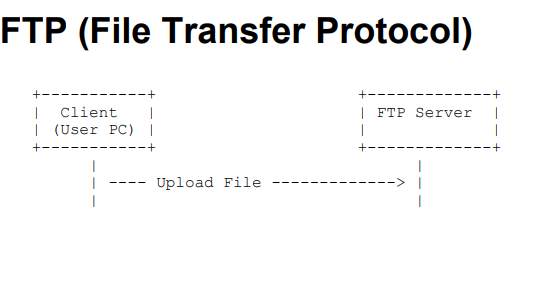

FTP is a standard network protocol used for transferring files between a client and a server over a computer network. It allows users to upload and download files from a remote server.

Key Features of FTP:
Supports file transfer between a client and a server
Provides authentication for secure access
Allows for the transfer of large files efficiently